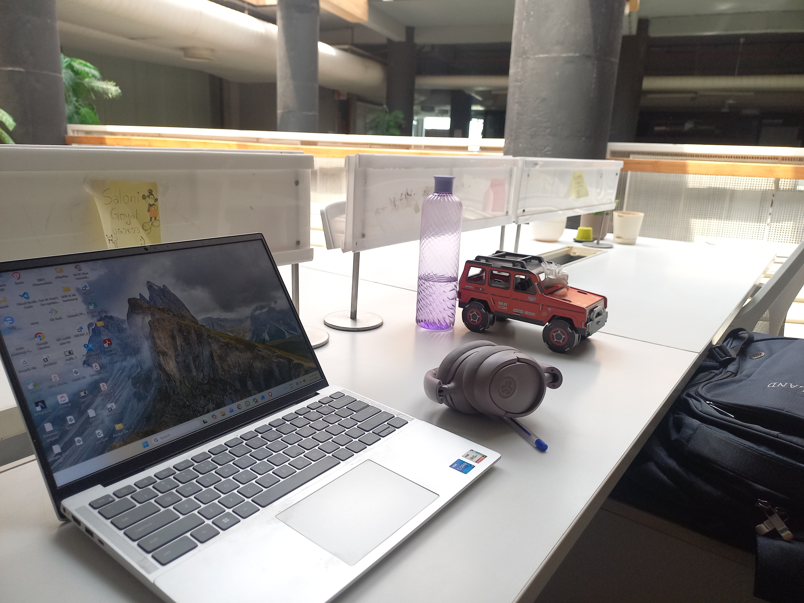
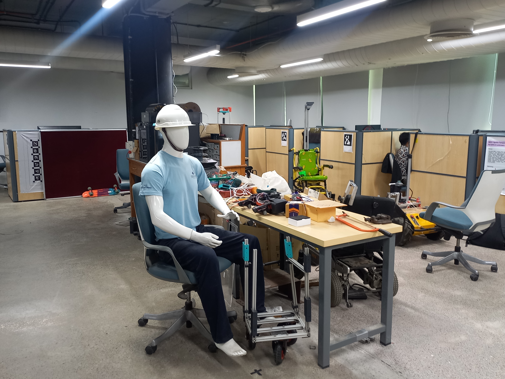

Engineering
Spatial Intelligence.
Data Science & Engineering student at MIT Manipal and Research Intern at the Robotics Research Center (RRC), IIIT Hyderabad. I focus on the intersection of Computer Vision and Machine Learning, designing architectures for instance retrieval and high-resolution Vision-Language Models.
Professional Experience
Research Intern
Robotics Research Center, IIIT Hyderabad | Advised by Dr. Sourav Garg
- Conducting research on instance retrieval in high-resolution aerial and satellite imagery.
- Exploring deep visual feature representations and similarity learning for object-centric retrieval.
- Engineered spatial data preprocessing pipelines for deep feature matching models.


Vision Gallery


Selected Projects
PyTorch • XGBoost • Sentinel-2 • GEDI LiDAR
Trained regression models on Sentinel-2 multispectral imagery using NASA GEDI LiDAR ground truth. Outperformed traditional vegetation indices by 23% in canopy height estimation.
Technical Competencies
PyTorch
OpenCV
Vision-Language Models (VLMs)
Python
Scikit-Learn
Instance Retrieval
Spatial AI
XGBoost